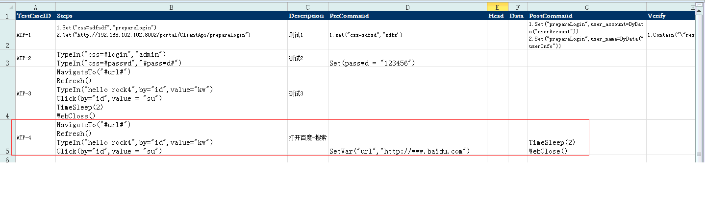
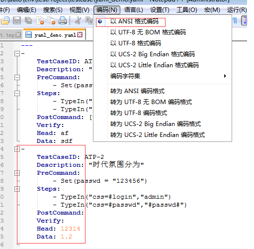
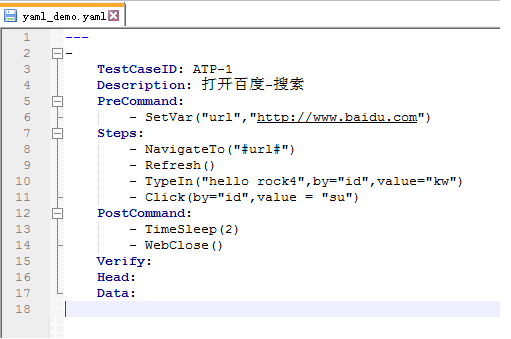

Rock4用法简介¶
1 安装¶
下载rock4的zip包，解压后执行: python setup_egg.py install
依赖:
appium-python-client>=0.11 autoitpy==1.0.0 beautifulsoup4>=4.5.1 selenium>=3.0.2 xlrd>=0.9.3 PyYAML>=3.12 requests>=2.13.0
2 入门指南¶
2.1 Local WebTest¶
- 用途
UI层面，测试浏览器的应用，单机部署
示例:
from rock4 import WebTest test = WebTest(browser = "chrome") driver = test.find_driver() driver.get("http://www.baidu.com") driver.quit()
- 示例详解
rock4.WebTest是rock4.softtest.web.TestDriver.TestDriver的别名，封装了所有selenium.webdriver本地浏览器Driver的实现:
from rock4 import WebTest然后, web测试实例化,目前支持WebDriver实现Firefox、Chrome浏览器和远程:
''' WebTest 默认的服务器参数: hub_ip="localhost", hub_port=4444 本地调用, WebTest的参数: browser: firefox or chrome download_path: 设置浏览器(firefox, chrome)，文件下载的路径 marionette: True / False, use firefox browser version 47.0.1 or greater if True ''' test = WebTest(browser = "chrome")
- 搜寻web测试的驱动
find_driver 与 find_drivers 优先驱动 Remote driver, 如果没有Local driver，启动本地驱动;
find_driver 返回第一个driver; find_drivers 返回dict:
driver = test.find_driver()返回的 driver 是 selenium 对象,get和quit都是selenium的函数:
driver.get("http://www.baidu.com") driver.quit()
2.2 Remote WebTest¶
- 用途
UI层面，测试浏览器的应用，单机部署及分布式部署
示例:
from rock4 import WebTest,Grid grid = Grid() grid.start_hub(port = 4444, block = False) grid.start_node(5555, block=False) test = WebTest() drivers = test.find_drivers() driver = drivers.items()[0][1] driver.get("http://www.baidu.com") driver.quit() grid.stop()
- 示例详解
rock4.Grid是rock4.softtest.web.TestDriver.SelRemote的别名，封装了所有selenium.webdriver.Remote的实现:
from rock4 import WebTest,Grid然后, 实例化Grid, 用于分布式的web测试，实际上就是对 selenium-server.jar的二次封装:
grid = Grid()start_hub用于启动 remote server端:
#port 默认是 4444端口; block 默认是True, False时,jar命令不会阻塞 grid.start_hub(port = 4444, block = False)start_node用于启动client端与serverd端的连接:
# 5555是指client开启的port; block 默认是True, False时,jar命令不会阻塞; # hub_ip 默认连接服务器是localhost; hub_port 默认连接服务器的端口是4444; grid.start_node(5555, block=False)然后, web测试实例化,目前支持WebDriver实现Firefox、Chrome浏览器和远程:
''' WebTest 默认的服务器参数: hub_ip="localhost", hub_port=4444 远程调用, WebTest的参数: browsers: 浏览器列表，仅支持(firefox, chrome)两种类型，用于一对一的驱动client的浏览器 patch_with: 补白的浏览器，用于browsers少于client的数量时启动的浏览器，默认是firefox marionette: True / False, 默认False; Firefox version >= 47.0.1时，需要设置为True,使用firefox的webdriver download_path: 设置浏览器(firefox, chrome)，文件下载的路径 ''' test = WebTest()
- 搜寻web测试的驱动和使用driver
find_drivers 返回dict; 格式: {command_executor：driver}; 这里的示例，使用了第一个driver:
drivers = test.find_drivers() driver = drivers.items()[0][1] driver.get("http://www.baidu.com") driver.quit()
- 最后，关闭服务器(kill java.exe for windows)
grid.stop()
2.3 PcWpfTest¶
- 用途
UI层面，测试WPF及MFC客户端的应用，单机部署(远程调用)
示例:
from rock4 import PcWpfTest import time test = PcWpfTest() driver = test.find_driver() driver.send("StartApplication",r'D:\auto\pc_install\npp.5.7.Installer.exe') driver.send("MouseDragTo", 400, 400, AutomationId = "TitleBar") time.sleep(1) print driver.send("MouseMove", 1056, 574) print driver.send("ClickablePoint",Name = "Cancel") print driver.send("ClickWin",Name = "OK") print driver.send("SwitchToWindow","Notepad++ v5.7 安装") print driver.send("ClickWin",Name = u"下一步(N) >") print driver.send("ClickWin",Name = u"我接受(I)") print driver.send("TypeInWin", ur"d:\hello input", AutomationId = "1019") print driver.send("ClickWin",Name = u"下一步(N) >") print driver.send("ClickWin",Name = u"取消(C)") print driver.send("SwitchToDefaultWindow") print driver.send("MouseClick",Name = u"是(Y)") driver.stop()
- 示例详解
rock4.PcWpfTest是rock4.softtest.pc.uiwpf.TestDriver.TestDriver的别名，封装了uiwpfdriver3.0以上版本的命令:
from rock4 import PcWpfTest然后, 实例化PcWpfTest:
test = PcWpfTest()
- 搜寻PcWpf测试的驱动
PcWpfTest只有远程调用的模式, 服务端uiwpfdriver.exe监听127.0.0.1:5820
find_driver 返回第一个driver; find_drivers 返回dict; 他们都会启用服务端进程:
driver = test.find_driver()返回的driver是uiwpfdriver的请求对象:
# send发送请求，格式: send(action, *args, **kwargs) # 远程调用action(*args, **kwargs) # args是action的参数; kwargs是UI的属性键值对, 用于识别UI; driver.send("StartApplication",r'D:\auto\pc_install\npp.5.7.Installer.exe') driver.send("MouseDragTo", 400, 400, AutomationId = "TitleBar") time.sleep(1) print driver.send("MouseMove", 1056, 574) print driver.send("ClickablePoint",Name = "Cancel") print driver.send("ClickWin",Name = "OK") print driver.send("SwitchToWindow","Notepad++ v5.7 安装") print driver.send("ClickWin",Name = u"下一步(N) >") print driver.send("ClickWin",Name = u"我接受(I)") print driver.send("TypeInWin", ur"d:\hello input", AutomationId = "1019") print driver.send("ClickWin",Name = u"下一步(N) >") print driver.send("ClickWin",Name = u"取消(C)") print driver.send("SwitchToDefaultWindow") print driver.send("MouseClick",Name = u"是(Y)")最后,退出关闭服务器:
driver.stop()
2.4 PcMfcTest¶
- 用途
UI层面，测试MFC客户端的应用，单机部署(本地调用)
示例:
from rock4 import PcMfcTest import time,subprocess subprocess.Popen([r"D:\auto\pc_install\npp.5.7.Installer.exe"]) test = PcMfcTest() driver = test.find_driver() driver.invoke("Opt","WinTitleMatchMode",2) driver.invoke("WinActivate","Installer Language") driver.invoke("ControlClick","Installer Language","","OK") time.sleep(0.5) driver.invoke("ControlClick","Notepad++","",u"下一步(&N) >") time.sleep(0.5) driver.invoke("ControlClick","Notepad++","",u"我接受(&I)") time.sleep(0.5) driver.invoke("ControlClick","Notepad++","","[ID:1019;class:Button]") driver.invoke("ControlSend","Notepad++","","[ID:1019;class:Button]","{END}+{HOME}") time.sleep(1) driver.invoke("ControlSend","Notepad++","","[ID:1019;class:Button]",ur"d:\hello input") time.sleep(0.5) driver.invoke("ControlClick","Notepad++","",u"下一步(&N) >") driver.invoke("ControlClick","Notepad++","",u"取消(&C)") time.sleep(0.5) driver.invoke("ControlClick","Notepad++","","[ID:6]")
- 示例详解
rock4.PcMfcTest是rock4.softtest.pc.uimfc.TestDriver.TestDriver的别名，封装了autoit_py.autoit.WinMFCDriver的实现:
from rock4 import PcMfcTest import time,subprocess然后, 实例化PcMfcTest:
test = PcMfcTest()
- 搜寻PcMfc测试的驱动
PcMfcTest只有本地调用的模式
find_driver 返回第一个driver; find_drivers 返回dict:
driver = test.find_driver()返回的 driver 是 autoit COM的对象:
driver.invoke("Opt","WinTitleMatchMode",2) driver.invoke("WinActivate","Installer Language") driver.invoke("ControlClick","Installer Language","","OK") time.sleep(0.5) driver.invoke("ControlClick","Notepad++","",u"下一步(&N) >") time.sleep(0.5) driver.invoke("ControlClick","Notepad++","",u"我接受(&I)") time.sleep(0.5) driver.invoke("ControlClick","Notepad++","","[ID:1019;class:Button]") driver.invoke("ControlSend","Notepad++","","[ID:1019;class:Button]","{END}+{HOME}") time.sleep(1) driver.invoke("ControlSend","Notepad++","","[ID:1019;class:Button]",ur"d:\hello input") time.sleep(0.5) driver.invoke("ControlClick","Notepad++","",u"下一步(&N) >") driver.invoke("ControlClick","Notepad++","",u"取消(&C)") time.sleep(0.5) driver.invoke("ControlClick","Notepad++","","[ID:6]")
2.5 PadTest¶
- 用途
UI层面，测试PAD移动端的应用，分布式部署(远程调用)
示例:
from rock4 import PadTest test = PadTest(r'D:\auto\python\app-autoApp\demoProject\apps\ApiDemos\ApiDemos-debug.apk') driver = test.find_driver('127.0.0.1:6555') driver.find_elements('name',"NFC")[0].click() driver.quit() test.stop()
- 示例详解
rock4.PadTest是rock4.softtest.pad.uiappium.TestDriver.TestDriver的别名，封装了appium的实现:
from rock4 import PadTest
- 然后, 实例化PadTest
实例化的过程中,会为每一台开启了debug模式并且已连接至电脑的pad设备,创建一个appium server;
监听的端口默认是4725,每增加一台,server端口自增1;
设备最多20台,保证设备在20台以内;
实例化,传入待测试的apk路径:
test = PadTest(r'D:\auto\python\app-autoApp\demoProject\apps\ApiDemos\ApiDemos-debug.apk')
- 搜寻PadTest测试的驱动
find_driver 返回传入deviceid,返回相应的driver;
find_drivers 返回device与driver的字典;
find_driver与find_drivers,都会连接至所有已创建了appium server的设备,通过deviceid获取相应driver:
driver = test.find_driver('127.0.0.1:6555')返回的 driver 是 appium的对象,设备的执行是异步的:
driver.find_elements('name',"NFC")[0].click() driver.quit()最后,退出关闭,所有服务器:
test.stop()
2.6 PacketTest¶
- 用途
API接口层面，测试web services模拟请求
示例:
from rock4 import PacketTest test = PacketTest() driver = test.find_driver() resp = driver.get("http://www.baidu.com") print resp.status_code
- 示例详解
rock4.PacketTest是rock4.softtest.api.webservice.irequests.TestDriver.TestDriver的别名，依据requests实现:
from rock4 import PacketTest然后, 实例化PacketTest:
test = PacketTest()
- 搜寻Packet测试的驱动
find_driver 返回第一个driver; find_drivers 返回dict:
driver = test.find_driver()返回的 driver 是 requests module:
resp = driver.get("http://www.baidu.com") print resp.status_code
3 数据模型指南¶
3.1 数据模型的字段设计¶
数据字段
字段 描述 TestCaseID 测试用例编号，具备唯一性 Description 用例描述,用于定义用例名称和描述用例 PreCommand 前置操作步骤,即在行Steps前执行的步骤 Steps 测试的操作步骤,按顺序执行 PostCommand 后置操作步骤 Verify 用例最后的验证操作 Head WebService的报文头 Data WebService的数据报文 执行字段的执行顺序
precommand->steps->postcommand->verify
数据模型的类型
Excel数据模型
默认使用 Excel中sheet名称为TestCase的工作薄
Excel第一行为标题行,设置为数据字段相应的值
Excel第二行开始为测试用例,每一个excel行,为一条用例,按顺序执行
执行的字段相应列的每个单元格内,每一个单元格行,为一个步骤,按顺序执行
图例:
用例的内在组织,采用列表嵌套字典的方式
Yaml数据模型
Yaml使用中文编码（ANSI格式）
执行的字段相应值,使用yaml中的序列格式表示,按序列顺序执行
图例一:
图例二:
用例的内在组织,采用列表嵌套字典的方式
关键字模型
- -格式
采用函数的模式,如 SetVar("url","www.baidu.com")
- -例外
进阶指南中,除了被描述为(模型不适用)的API外, 大部分API,是支持关键字的使用
- 具体关键字及API
- 参见进阶指南
3.1 数据模型的运行¶
目的
将Yaml或者Excel的数据模型的关键字数据,依据其执行顺序,组织为测试项目的执行用例,然后,完成测试并输出测试报告
简单示例,test.py源码:
from rock4 import target,shoot,PcWpfTest target("ATest", proj_path = r'D:\testProject', initdirs = True) def test(devdriver): shoot(devdriver = devdriver,modelfile = r'D:\auto\env\testProject\testcase\pc_wpf_yaml_usage.yaml',modeltype="pcwpf") if __name__ == "__main__": test = PcWpfTest() test.run_model_case(case_detail)
- 示例详解
引用target,shoot及测试客户端应用的PcWpfTest:
from rock4 import target,shoot,PcWpfTest然后, 初始化测试项目:
target("ATest", proj_path = r'D:\testProject', initdirs = True) - 第一个参数为项目主题,用于描述项目 - proj_path -->初始化项目的路径 - initdirs -->若没有该项目目录，则创建项目目录结构创建测试回调函数:
def test(devdriver): shoot(devdriver = devdriver,modelfile = r'D:\auto\env\testProject\testcase\pc_wpf_yaml_usage.yaml',modeltype="pcwpf") - 该函数test,仅带一个参数,用于传递driver - 该函数，仅仅调用shoot,shoot有四个参数: devdriver,modelfile,modeltype,debug - devdriver ->字典类型,传递drivers - modelfile ->传入模型文件 - modeltype ->模型文件采用的关键字类型; 共 5 个类型: pcwpf,pcmfc,web,pad,api依据关键字类型,实例化:
test = PcWpfTest()实例化对象,调用回调函数,执行测试:
test.run_model_case(case_detail)
- 其他模型
参见进阶指南